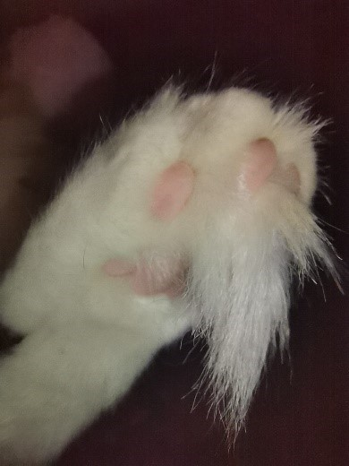

Származása
A Maine Coon egy Amerikából hajóval áthozott macskafajta. Jellemző rájuk a hosszú szőr a hasukon, a talpukon és a lábukon, míg a hátukon rövidebb a szőrük. Az átlag házi macskához viszonyítva testarányosan nagyobb szeme van. Füle úgyszintén szőrös és rendkívül érzékeny. Jellemző rá még a nagy bundás, pamacsos farok, mely a hideg téli éjszakákon megvédi őket a fagytól. Viszonylag későn, 3-5 éves korukra fejlődnek ki teljesen, a nőstények általában 6-8 míg a hímek akár 8-12 kilóra is megnőhetnek.

Nyunyó mancsa